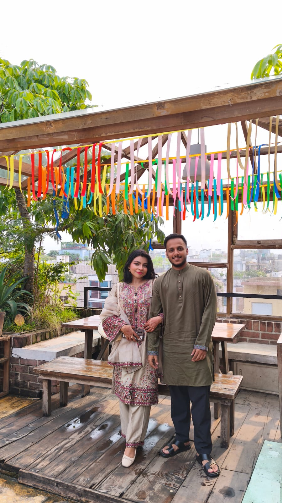
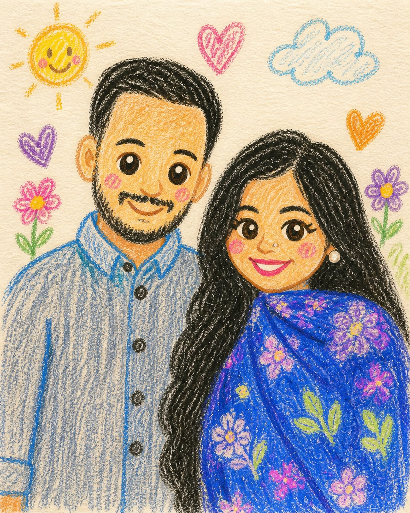
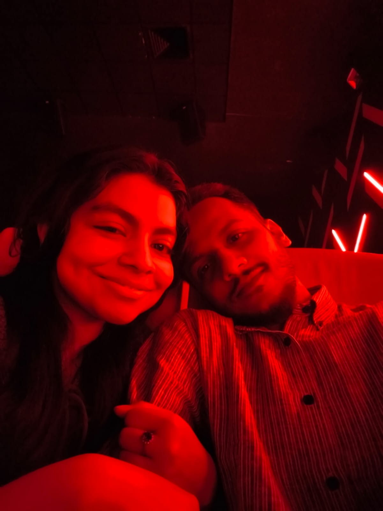
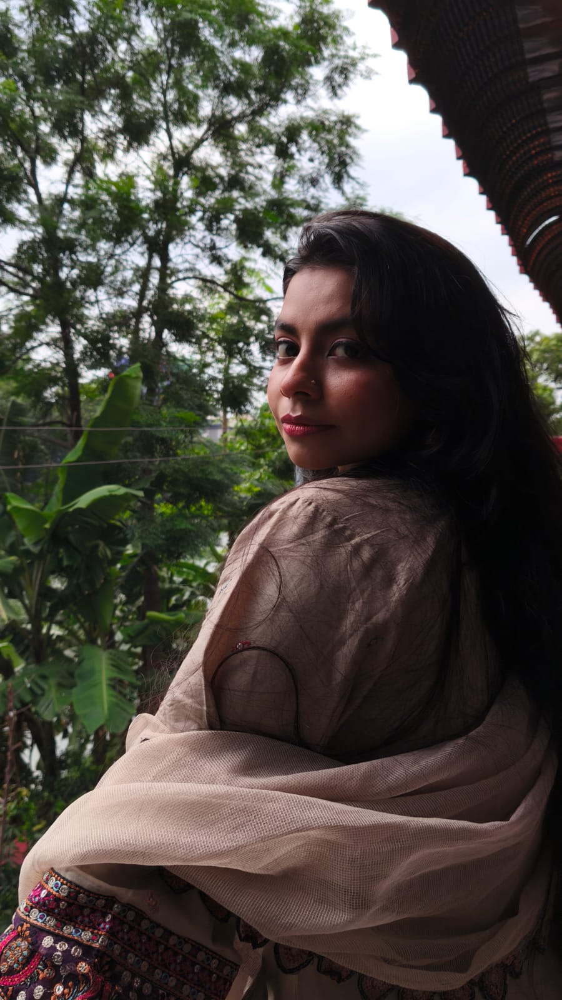
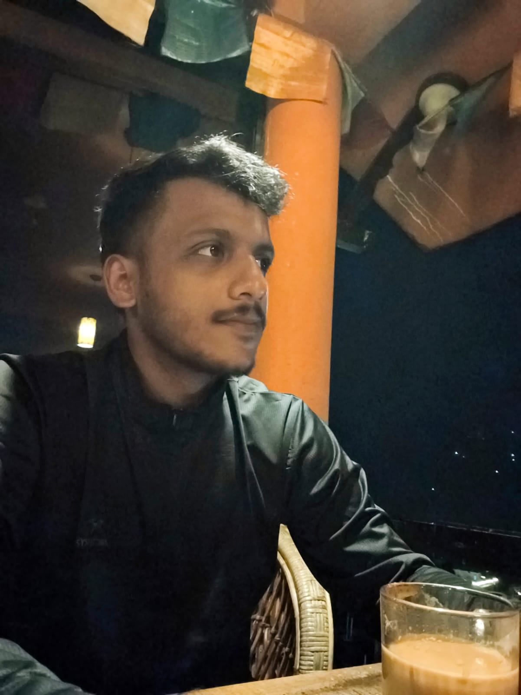

For Tahira
Maybe some things
need to be said slowly.
So I made this little place for our story, the things I understand now, and everything I couldn't say properly before.

Our story
It started so simply.
Somewhere along the way, you stopped being just someone I liked talking to. You became the person I wanted to share the small things with, the person I imagined beside me when I thought about what life could look like.
We had our own little world — conversations, silly moments, plans, misunderstandings, making up, and all the ordinary things that slowly became important because they were ours.
I don't think either of us expected that we would reach a point where we would have to wonder whether our story had ended.


Where we are now
Somewhere along the way,
we got lost.
I know that my ego, my hurt and the way I withdrew played a big part in that. I am not building this to pretend otherwise.


I know what I did wrong.
I should have talked to you. I should have stayed. I should have let you see what was actually happening inside my head instead of disappearing into it.
I understand myself a little better now.
I have always been very self-sufficient. When something hurts my self-esteem, my instinct is to withdraw and protect myself. I thought that was strength. I understand now that sometimes staying and communicating is the stronger thing.
I needed this phase to learn that.
I wish I had learned it without hurting you. But going through this forced me to look at the part of me I kept avoiding. I don't want to become a different person just to win you back. I want to become better because you deserve a better version of the person who loves you.
And slowly, I started moving closer again.
Not because the past stopped mattering. Because I finally understood what mattered more than my hurt.
Our story isn't a straight line
No love story is perfect.
Maybe a difficult chapter doesn't have to be the last chapter.
Beginning
Two people finding each other.
Infatuation
Everything felt new.
Love
It became something real.
A bad phase
This is where we are.
YOU ARE HEREGetting back
Only if we both choose it.
Continuity
Choosing each other through real life.
Happily ever after
A hope, not a promise.
For the difficult days
Things I wish I could answer
whenever your mind asks them.
You don't have to open these now. They're here in case someday you need to know what I would say.
“I chose him, but he didn't choose me.”+
I know why you feel that way, especially because of what happened on June 6. You asked me not to leave and I still did. I know there is no explanation that can change what that must have felt like for you. But please don't think that I walked away because I didn't choose you. I walked away because at that point I didn't know how to deal with everything I was feeling. I chose the wrong way of dealing with it, and I know I hurt you because of that.
“Maybe he didn't love me as much as I thought he did.”+
I don't know how I can prove this to you now, but I never stopped loving you just because I stopped talking. I thought about calling you so many times. I thought about calling aunty. My home screen still has our picture. My gallery is still filled with our photos. I still haven't changed your nickname in Messenger. I know none of these things can undo what I did, but I want you to know that I wasn't living my life as if you had simply disappeared from it.
“Maybe I was stupid to trust him.”+
I don't think you were stupid for trusting me. I gave you reasons to trust me and then I failed you when you needed me. That's on me. You don't need to blame yourself for believing in someone you loved. If anyone should carry that responsibility, it should be me for not protecting that trust.
“I hurt my family and made them miserable because of him.”+
I know this is something that hurts you deeply, and I don't want to tell you that you shouldn't feel that way. But please don't think that loving me was something shameful or that everything you felt for me was a mistake. You loved someone and believed in the future you were trying to build with him. I know what happened afterwards caused pain for your family, but you shouldn't have to spend the rest of your life punishing yourself for loving someone.
“Maybe he only came back because he was lonely.”+
I understand why you could think that. But that's not why I'm here. I didn't come back because I couldn't find someone else or because I suddenly felt lonely. I came back because I finally had enough time to understand what I had actually done and what I actually wanted. With all the noise gone, I realised that I didn't want to lose you.
“What if he leaves again when things become difficult?”+
I know I can't expect you to believe me when I say I won't. I wouldn't believe it either if I were in your position. I can only say that I understand now that leaving cannot be my way of dealing with difficult things. If I ever get another chance, I know I have to show you that through my actions. I can't ask you to forget what happened. I can only hope that someday I can show you that I have learned from it.
“Maybe he has already moved on.”+
I haven't. But I also don't want you to feel responsible for that. You don't owe me anything because I haven't moved on. I just want you to know that I didn't stop caring about you. Even when I was quiet, you were still there in my thoughts. I just didn't know how to communicate any of it.
“Maybe I should never have loved him.”+
I really don't want you to think that. If there is one thing I would never want you to regret, it is loving me. I know I hurt you, and I know I gave you every reason to question what we had. But the love you gave me was never something wrong. You gave me something very genuine, and I will always be grateful for that.
And if one day you think, “He still doesn't understand how badly he hurt me.”
I do, Tahira.
I understand why June 6 hurts you. I understand why you feel like I abandoned you. I understand why you feel like you chose me and I didn't choose you. And I understand why you don't trust me anymore.
I'm not writing this to argue with any of that. You have every right to feel the way you feel.
I just don't want you to carry the wrong idea about why I left.
I didn't leave because you weren't enough.
I didn't leave because I didn't love you.
I didn't leave because I wanted someone else.
I left because I was hurt, confused, and too attached to my own way of protecting myself. And instead of communicating with the person I loved, I withdrew. That was my failure.
One last thing
Can we try again?
I'm not asking you to forget anything. I'm not asking you to pretend nothing happened. I'm only asking whether there is still a small part of you that can imagine giving us another chance.
You don't have to make a perfect decision. Just tell me you're ready to talk.
Then call me.
+880 1332 543 2541